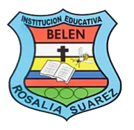

Rosalia suarez
Los profesores de nuestra institución
Esta es nuestra lista de nuestros excelentes profesores que nos ayudan a potenciar el conocimiento en nuestros estudiantes
Ciencias politicas y sociales
Pedro Nel Ospina Moreno
Docente de ciencias sociales y politicas, un profesor dedicado a la mejora educativa
Ciencias naturales y educación ambiental
Flor Maria Soto
Docente de quimica y ciencias naturales, directora del comite ambiental comite que a manejado desde hace muchos años y que es una gran representación en nuestra institución
Mary Luz Correa
Docente de ciencias naturales
Educación fisica, recreación y deportes
Gloria Aristizabal
Docente de la materia de educación fisica y deportes
Gregorio Quiroz
Docente de educación fisica y deportes
Filosofia
Numa
Docente de la materia de filosofia y religión